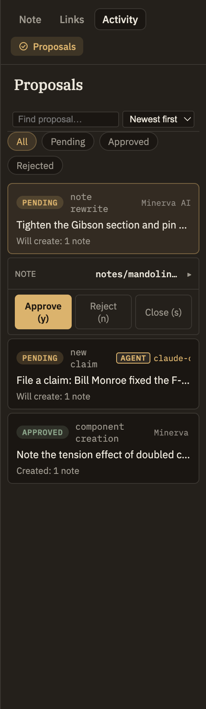

Docs/Conversations/Propose, review, approve
The propose, review, approve loop
The AI in Minerva can suggest changes to your knowledge base — new claims, rewritten notes, fresh tags, a summary of a source. But it never makes those changes on its own. Every suggestion waits for you to look it over and say yes or no. Nothing the AI proposes becomes part of what you know until you approve it.
The AI proposes, you decide. Treat what the AI gives you as evidence to weigh and file, not as the final word. This is the most important design choice in Minerva: your knowledge base stays yours.
Why suggestions wait for you
The AI is a helpful source of ideas about your notes, not an editor with the keys to your knowledge base. So everything it wants to change stays a suggestion until you look at it. A wrong claim, a bad link, or an invented detail simply sits waiting for review — it never quietly slips into what you know.
Everything is a proposal
There are no exceptions to learn and no changes that skip review. Whatever the AI comes up with — a new claim, a link between notes, a moved or renamed note, a deletion, a rewrite, or details about a source — it all arrives as a proposal you can find in the Proposals panel, and none of it is applied until you act on it.
This is true even for changes that feel automatic. When the AI suggests tags for a note, for instance, accepting them on the conversation card is what approves the change — so it still passes through the same review, just with one quick tap.
Reviewing a proposal
A proposal isn't a vague one-line promise you have to trust. It shows you exactly what would change, so you can read the real thing before deciding:
- For a new note, you see the whole note that would be created and where it would be filed — not a summary of it.
- For a rewrite, you see the full new version of the note. Approving keeps a copy of the old version, so the change can be undone later.
- For a move or a deletion, you see which note is being moved or removed.
A single proposal can bundle several changes together, and they travel as a set: approving applies all of them, rejecting discards all of them — never half.

Approving and rejecting
Once you've read a proposal, the decision is one keystroke: y to approve, n to reject. Approving applies the change; rejecting throws it away. Either way the proposal stays on record, so you always have a history of what was suggested and what you decided. See Proposals for the full set of shortcuts and ways to filter what you're looking at.